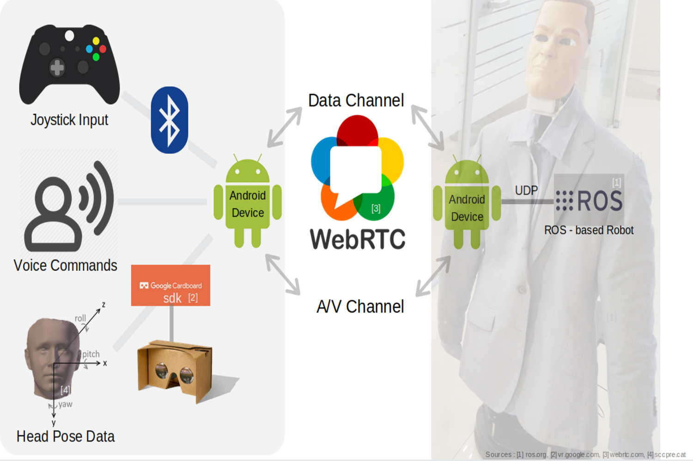

V R Present
A frugal framework for telepresence applications.
Introduction
Globalization has led to the distribution of corporate operations across multiple geographies. As a result, employees are commonly required to participate in interactions with remote workspaces. Even though video-conferencing is increasingly being used to make this possible, interacting with static displays feels too impersonal and lacks a physical dimension. Telepresence and Tele-robotics aim to bridge this gap, and in this paper, we describe a frugal setup that provides a more natural and immersive experience for the participating entities, with the help of virtual reality on one end, and a robotic avatar representing the human on the other side of the communication. In addition, the same framework can also be adapted to the domains of Tele-Surveillance, wherein a human can control a robot to monitor a remote area from a safe vantage point, and Tele-assistance, wherein experts can remotely guide on-site employees. The frugality stems from the use of basic Android phones on either end of the communication, and from the fact that the software for controlling the robot has been written generically so as to support a large variety of robots, as per need. Such a system would help reduce the time, cost and effort spent by organizations and employees on travel logistics, as well as provide an option for off-site operation, while providing a better and more control-rich simulation of physical presence than standard video-conferencing.
Architecture
Figures depicting overall system and architecture is described below.
